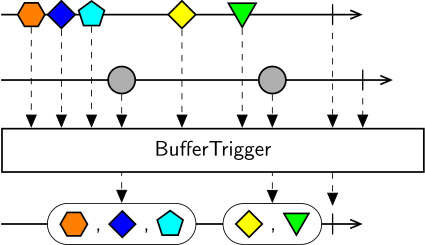

BufferTrigger groups the notifications of the source sequence into chunks, where the opening of each chunk is triggered by the notifications of the second sequence. The rules for closing each buffer can be specified using the Count and TimeSpan properties.
If neither buffer count nor buffer time span are specified, chunks will be strictly non-overlapping, with the previous chunk being closed when a new chunk is created. In this case, and only this case, the first chunk is also created immediately at the start of the sequence.
If the Count property or the TimeSpan property is specified, then a new chunk is created when the second sequence emits a notification, and it is automatically closed after either the specified number of elements is collected or the specified time span elapses. If a new chunk is created before the previous chunk is closed, then chunks will overlap, and any elements emitted during this period will be included in both buffers. If at any moment there is no open buffer, elements emitted from the source sequence will be dropped.